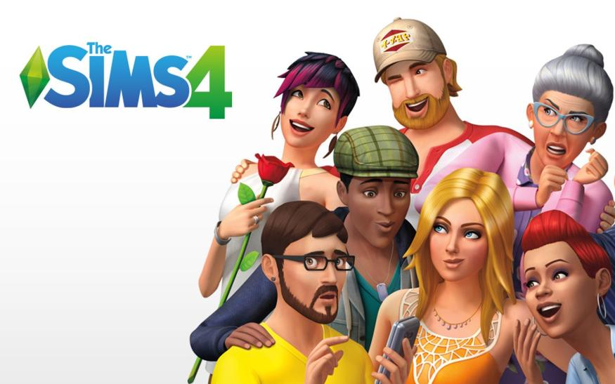
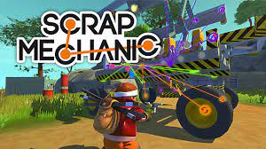
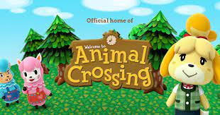

1. The Sims 4

The Sims 4 is a social simulation game, similar to previous editions in the franchise.
The player is urged to make decisions and participate completely in an interactive
environment since there is no overarching purpose or goal to pursue. The player is in
charge of controlling the activities of the "Sims," responding to their "needs," and
assisting them in fulfilling their goals. The game centers on the simulated lives of
these virtual characters.
It is a great game and I really recommend this game for people who like controlling game characters
want to see how they make characters.
2. Scrap Mechanic

Scrap Mechanic is a brand-new creative multiplayer sandbox game in which you explore,
scrounge, and acquire items from a vast dynamic universe. You may construct shelters,
spectacular moving vehicles and machines with the materials you've gathered to help
you survive the perilous adventures that lie ahead. Join forces with friends or engage
in combat with players and machines that seek to take your possessions.
It is a great game and I really recommend this game for creative people who like
teaming up with/playing against others.
3. Animal Crossing

Animal Crossing is a video game in which the player takes on the role of a human character
who travels to a rural community populated by mythical creatures and remains there
eternally. The gameplay is open-ended; there are no set goals; instead, players are
invited to spend their time in the town engaging in any number of activities, such as
gathering objects, cultivating plants, capturing insects, fishing, and mingling with the
locals.
It is a great game and I really recommend this game for creative people who want to play
with others and have fun.
4. Minecraft

Minecraft is a 3D sandbox game that gives players a lot of choice in how they choose to play
because there are no set objectives to complete. The game's environment is made out of basic
3D items, mostly cubes and liquids known as "blocks," that represent different types of
substances including earth, stone, ores, tree trunks, water, and lava.
It is a great game and I really recommend this game for creative people who want a bit of a
survival aspect.
5. Stardew Valley

Stardew Valley is an agricultural simulation game based on the Tale of Seasons video game series.
Players establish a character at the beginning of the game, who receives a plot of land and a
little house that belonged to their grandpa in the small town of Pelican Town. Gamers can choose
from a variety of farms, each having its own theme, advantages, and disadvantages. The countryside
is initially covered with stones, trees, stumps, and weeds; players must labour to clear these in
order to restart the farm. They must then tend to crops and cattle in order to earn money and
further expand the farm's structures and amenities.
It is a great game and I really recommend this game for people who like playing farm based games and like a good storyline.